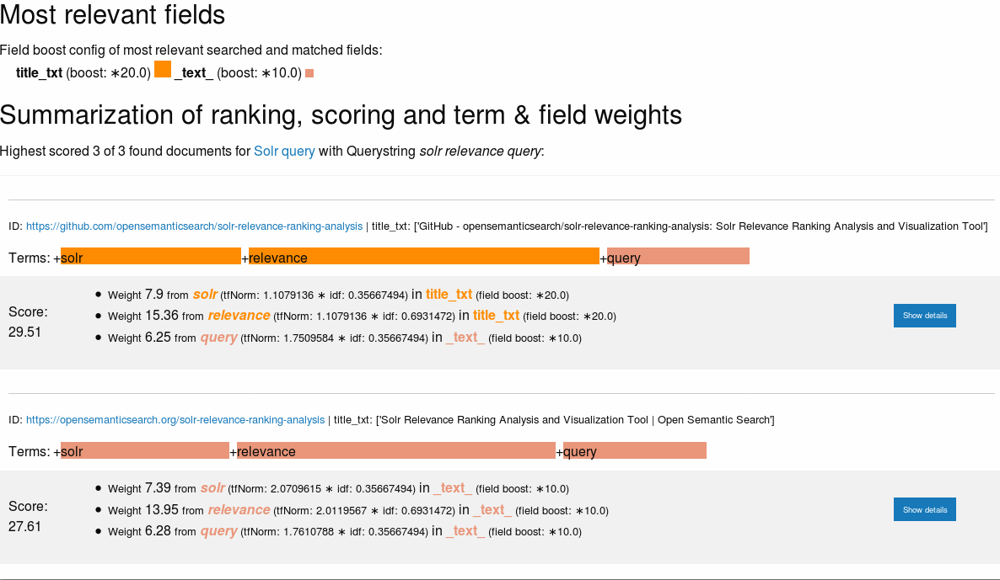

Solr Relevance Ranking Analysis and Visualization Tool
Relevance Ranking Analysis and Visualization for easier Solr relevancy tuning
This Python Django based Open Source tool and web user interface (UI) allows for easier Solr Relevancy analysis and is helpful while one is performing search relevance tuning and relevancy ranking debugging.
The tool summarizes and visualizes the relevance ranking and scoring by field boosts (qf), term weights (TF/IDF) and the boost function (bf) score of documents found by an Apache Solr search query.
Usage
Open the web user interface (UI) on the server/port/path you run this Django web app (see section "Installation").
Copy the full Solr query (URL) to the field "Query" of the form in the web user interface (UI)
Click the button "Analyze relevance ranking"
Visual summary
So you get a visual summary of the relevance ranking of the found documents:

Ranking details
By clicking the button "Show details" you get the full details of the scoring calculation for each document:

Visualization
The button "Chart" in the top bar shows a more compact visualization:

Installation and configuration
The tool can be used with other Apache Solr environments than Open Semantic Search.
You can find the documentation on installation and configuration in the README.md.
Free Open Source Software
The tool is Free Software. You can find the full Source Code on GitHub